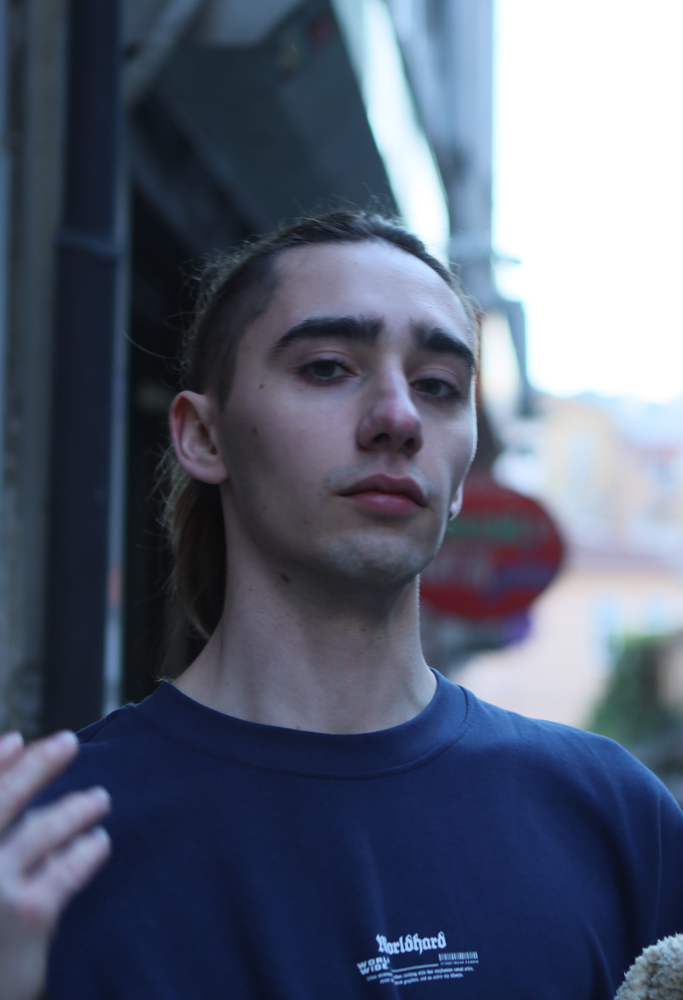

00 / about
the
human.
cntrll is the working alias of a professional session drummer based in Berlin — a Brit by training, a Berliner by choice. Touring kit, studio kit, MIDI grid, notation paper. Whichever room the song needs.
Quiet on stage, dry in conversation, useful in a control room. Plays what the song asks for and leaves the rest at the door.
section / background
how the kit
got here.
Started on a practice pad in a back bedroom; finished formal study at BIMM — first in Brighton, then Berlin. Years on the circuit since: pub tours, support slots, festival stages, tape and floppy-disk-era sessions, and far too many click tracks.
Credits across metal, pop, punk and the in-between — full discography on request. Comfortable behind a kit, behind a laptop, or behind a stack of charts.
section / values
how the
work works.
- The song
- Always first. Chops live in the practice room.
- The producer
- Best at delivering a brief; better at improving one. Direction welcome.
- The clock
- Stems back when promised. Honest quotes, honest hours.
- The room
- Quiet, sober, technical when it needs to be. Bus driver if it doesn't.
- Discretion
- NDAs as standard. Credit only by your label's terms.